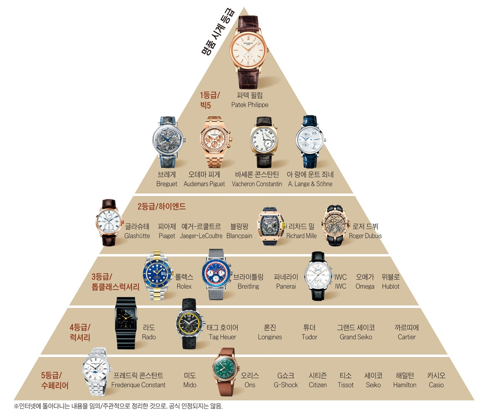
'명품 시계'
20세기 초반부터 현시점에 이르기까지
망할 요소가 엄청나게 많았는데 오히려 더 잘 나가는 중임
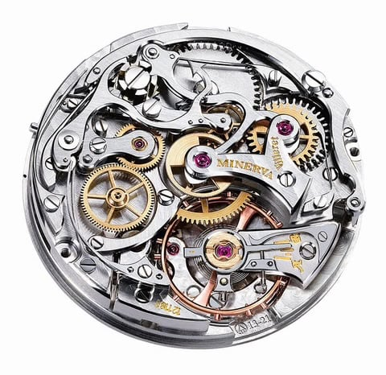
일례로 원래 시계란 물건은 그당시 초정밀 공학의 극치였음
사람 눈으로 간신히 볼 수 있을 정도의 톱니바퀴랑 스프링을
빼곡하게 넣고 그걸로 정확한 시간을 표시하는 기계였으니까
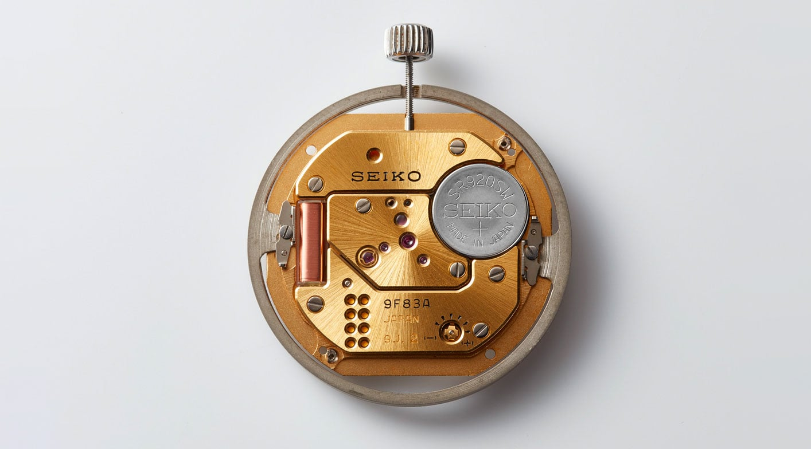
그러다 어느 일본 회사가 '딸깍' 해버림
동전만한 배터리 넣으면 태엽이 풀릴 걱정 없고
오차 범위도 훨씬 줄어든 쿼츠 무브먼트를 발명해버림
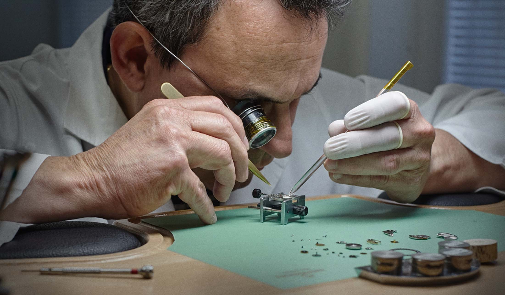
이제 스위스에서 수십년 경력 쌓인 장인들이 오차 줄이겠다고
현미경으로 정밀조립하고 루비베어링 박고 별짓 다 하는 동안
중국에서 소주한병 딴 시계 장인 (경력 2개월) 이 딸깍한 시계가
더 정확하고 가볍고 내구성도 좋았음
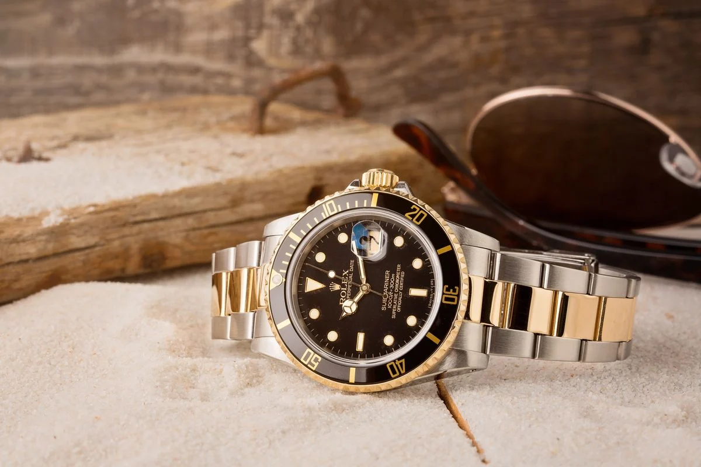
여기서 시계 브랜드들은 머리 좋게 명품화 전략으로 살아남음
어차피 성능으로는 상대가 안되니까 이때부터 스위스산 시계가
금이나 다이아몬드올리고 마감 강조하는 마케팅이 생겨남
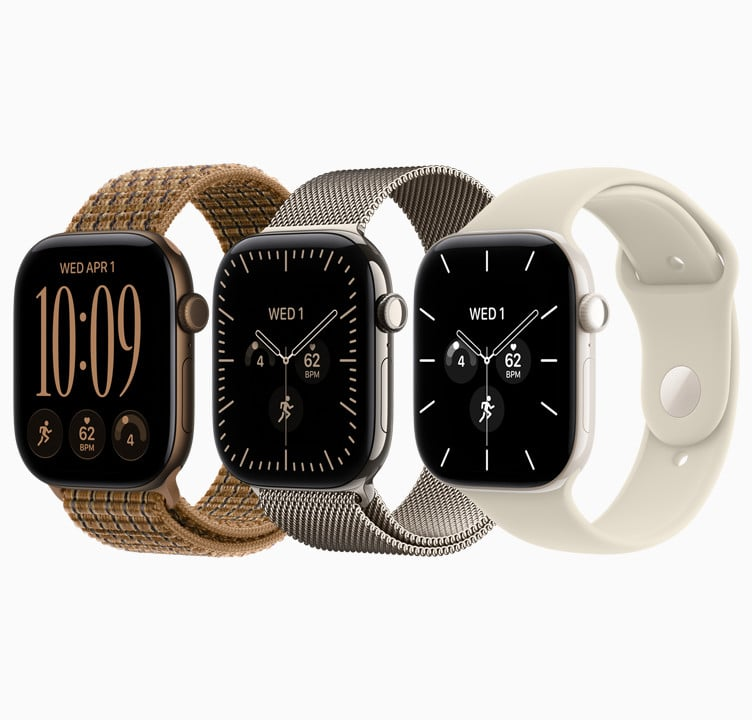
그러다 재앙같은 일이 일어남
2010년대부터 생겨난 스마트워치의 등장인데
이때부터는 '시계' 로서 싸움이 불가능해짐
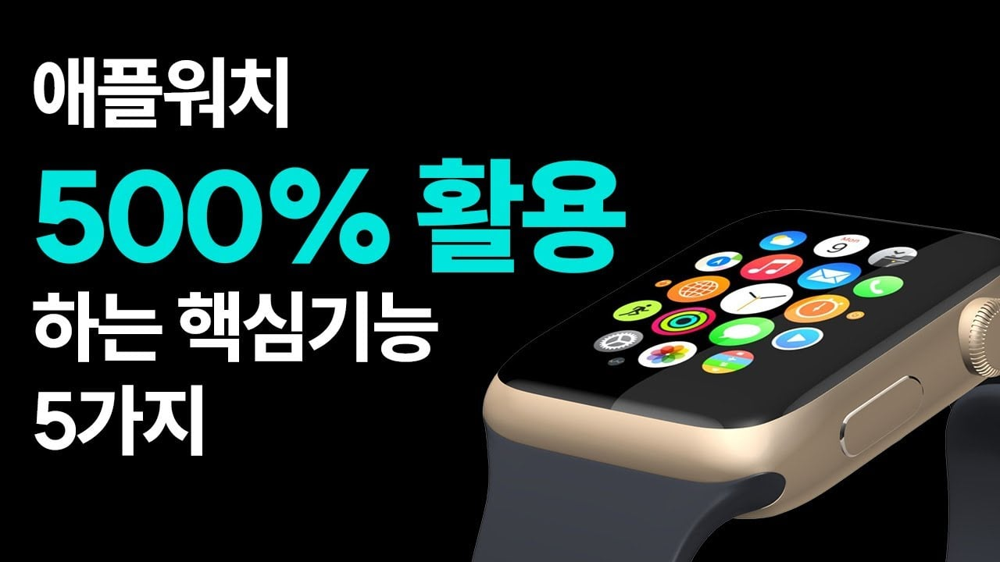
이거는 뭐 시계의 정밀도 싸움 수준이 아니라
자전거 vs 테슬라 수준의 싸움이었으니까
이거 처음 나왔을때 뉴스에서도 이제 시계산업망했다 소리 엄청 나옴
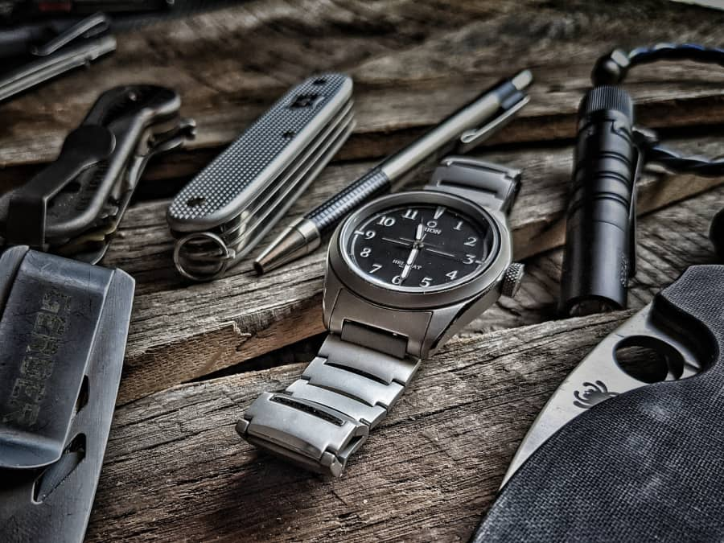
사실 그동안 중저가 기계식 시계가 싸워볼만 하던게
배터리없이도 언제 어디서나 손목만 흔들면 돌아가는
비상상황 대처 edc 같은 컨셉이 있었지만
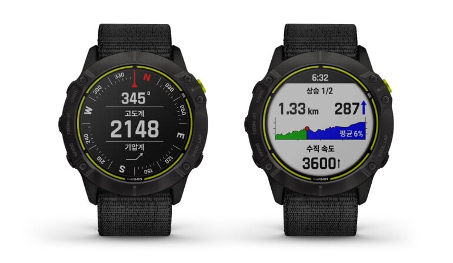
이제는 태양광 충전으로 돌아가고 GPS 로 네비게이션이 있으며
조난 신호 송출까지 가능한 괴물같은 무언가가 나와버렸음
뻔한 전개이긴 하지만 여기서 명품 시계 회사들은
오히려 한단계 더 명품레벨로 도약해버림
오히려 공급을 통제하고 가격을 올림
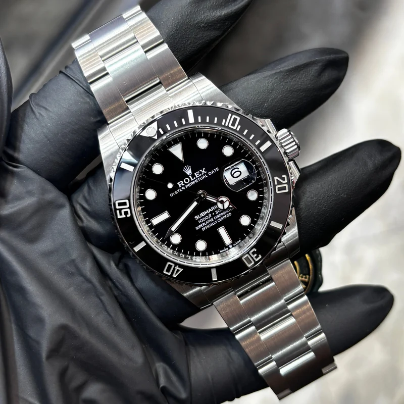
이제 롤렉스에서 가장 유명한 모델인 서브마리너를 구매하려면
롤렉스 매장 가서 비인기모델들을 몇개 구매하면서 딜러와 안면을 트고
거기 사람들 비위 맞춰주면서 한 2년에서 3년 기다려야 구매 가능함
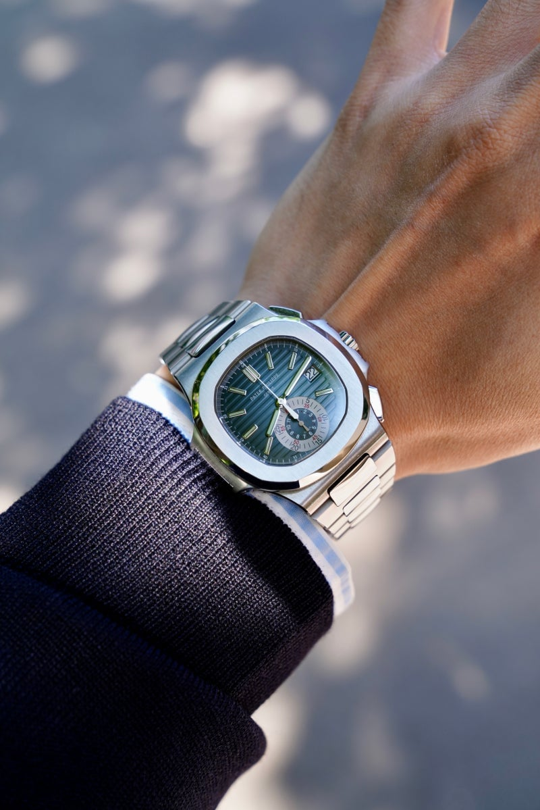
시계 계급의 가장 윗단에 있는 파텍필립 노틸러스를 구매하려면
수시로 매장에 드나들면서 파텍필립의 역사와 전통을 찬양하고
수천만원짜리 비인기 모델을 구매하면서 기회를 엿봐야함
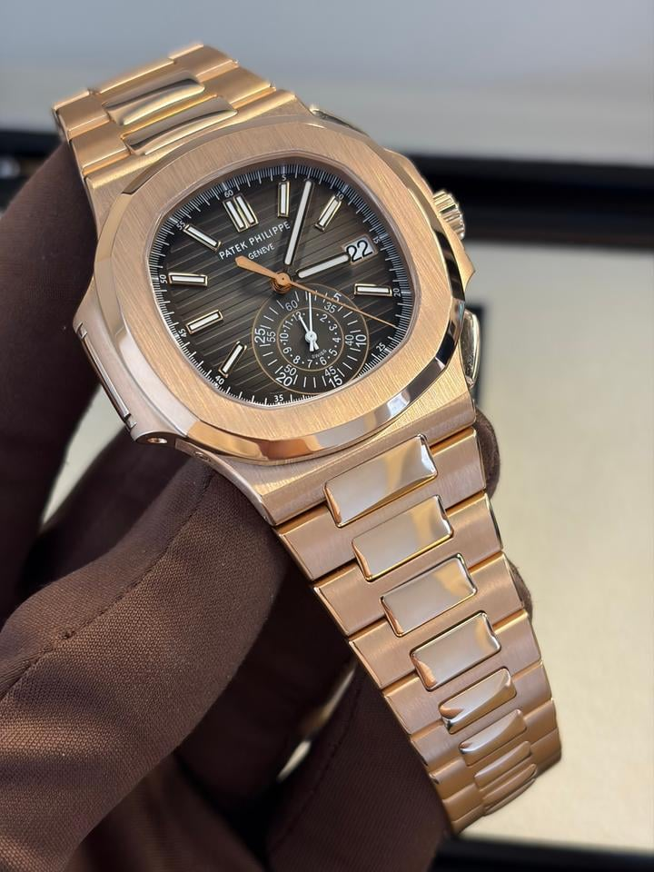
그런 노력을 수년간 하다가 이제 딜러들의 신뢰기 쌓이면
딜러가 이 사람이 왜 파텍필립을 가져야하는제 추천서 작성해서
스위스 본사로 올려보냄 ㅋㅋㅋㅋㅋㅋㅋㅋㅋ
솔직히 사치품이라는게 다 그런거다 싶으면서도
유럽제 명품이라 불리는 대부분의 물건 제조사들은
'꼬우면 사지 마 거지야' 마인드로 파는게 참 신기하긴 함
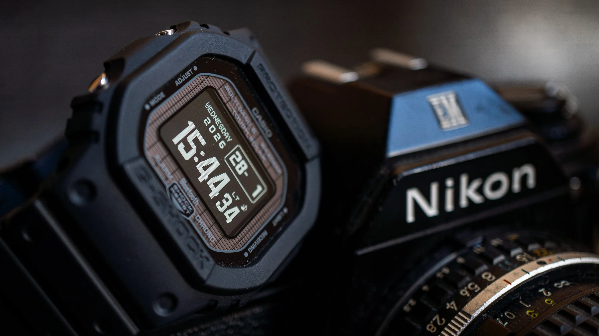
나도 한때 시계에 미친듯이 빠져있던때가 있었는데
결국엔 나이 들어가면서 지샥으로 회귀하는중임
비싼거 쓸때는 기스 한번 생기면 몇주동안 기분이 나빴는데
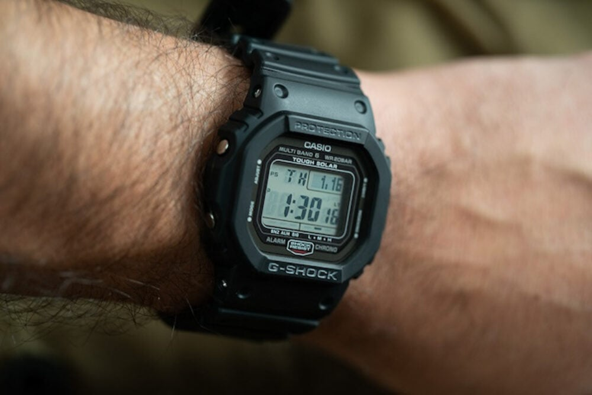
2026년에 어린시절의 향수를 불러일으키는 전자액정의 향수도 있고
24시간 한번도 안풀고 샤워 수영 다 하는데 스트레스가 없음
어쩌다 보니까 카시오 광고처럼 변해버렸는데 이미 고치기엔
너무 멀리 와버렸다 씨발
ㅋㅋㅋㅋㅋㅋㅋㅋㅋㅋ